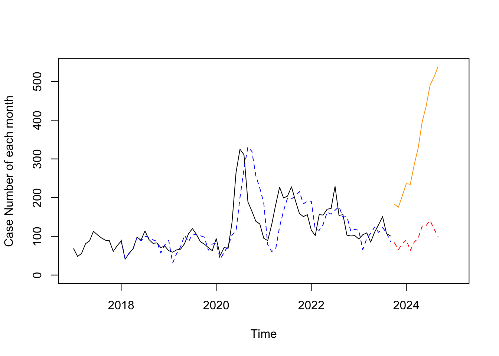

Prediction of Case Number
First, we import the cleaned data into the environment, and grouped the data by year and month. After that, we count the case number of each month and would like to find out that is there any serial autocorrelation. To predict the future data, we still need to conduct some test about the original data.
Slice the data
cases_ts =
every_month |>
pull(cases_number)|>
ts(start = c(2006,1), frequency = 12)
plot(cases_ts,
main = "Shooting cases per month",
xlab = "Year",
ylab = "Frequency")## test model
test_series =
every_month |>
filter(year>=2017) |>
pull(cases_number)
test_series = ts(test_series,start = c(2017,1), frequency = 12)After that, we draw the plot of the original data. It is clear that we can’t recognize any upward or downward trend in the time series from the graphs. In order to make the model focused more on recent data points, we decided to reduce the training data. Hence，the model would give more weight on the recent data rather than other distant data.
Conducting the test
Box.test(test_series,type = "Ljung",lag = 6)##
## Box-Ljung test
##
## data: test_series
## X-squared = 104.33, df = 6, p-value < 2.2e-16\(H_{0}\): The data are independently distributed (i.e. the correlations in the population from which the sample is taken are 0, so that any observed correlations in the data result from randomness of the sampling process).
\(H_{1}\): The data are not independently distributed; they exhibit serial correlation.
Then, we need to reject the NULL hypothesis and concluded that the exhibit serial correlation, in other words, this series is not a white noise series and it includes some informations which we need. After that, we need to conduct Augmented Dickey-Fuller Test to to examine whether the series is a stationary time series or not. If the series is not stationary then the series is to be stabilized by difference.
aTSA::adf.test(test_series)## Augmented Dickey-Fuller Test
## alternative: stationary
##
## Type 1: no drift no trend
## lag ADF p.value
## [1,] 0 -1.048 0.302
## [2,] 1 -1.272 0.221
## [3,] 2 -1.263 0.225
## [4,] 3 -0.958 0.334
## Type 2: with drift no trend
## lag ADF p.value
## [1,] 0 -2.71 0.0812
## [2,] 1 -3.56 0.0100
## [3,] 2 -3.70 0.0100
## [4,] 3 -2.90 0.0512
## Type 3: with drift and trend
## lag ADF p.value
## [1,] 0 -2.83 0.2341
## [2,] 1 -3.79 0.0234
## [3,] 2 -4.05 0.0118
## [4,] 3 -3.24 0.0876
## ----
## Note: in fact, p.value = 0.01 means p.value <= 0.01\(H_0\):The time series has a unit root, implying that it is non-stationary.
\(H_1\):The time series does not have a unit root, implying that it is stationary.
From the above test result, we can clear in the model of no drift and no trend, all the p-value is greater than the given alpha (\(\alpha=0.05\)), as a result, we have strong evidence to prove that this series does not have a unit root and concluded that it’s a stationary series.
acf(test_series, lag.max = 20)
pacf(test_series)
decomposed =
decompose(test_series,
type = "additive")
plot(decomposed)As the normal time-series prediction procedure requested, we also made the plot of autocorrelation function(ACF) and partial autocorrelation function(PACF) to help us know more about this series. What’s more, we deceided to decomposed the series by additive method according to the existing feature to this series. From the decomposed graph, we can clearly know that it has a strong seasonality which is periodic and generally regular and predictable changes that occur over a year. Compared to the period when we were undergoing the global pandemic of Covid-19(2020-2022), we can clearly see a downward trend in the number of cases.
Grid Research via For Loop
After that, all of us prefer to use the Holtwinter to forecast the series which is a way to model three aspects of the time series: a typical value (average), a slope (trend) over time, and a cyclical repeating pattern (seasonality).
As a result, we need to find out the best parameter for this model. Then, we wrote a function about building a model with different parameters and tried to evaluate the model validity by calculating the root of the mean of the squared errors between the predicted and actual values.
holtwinters_rmse = function(alpha, beta, gamma, df) {
fit = HoltWinters(df, alpha = alpha, beta = beta, gamma = gamma)
forecast_values = forecast::forecast(fit, h = length(df))
actual_values =
as.numeric(df)
forecasted_values =
as.numeric(forecast_values$mean)
rmse = sqrt(mean((actual_values - forecasted_values)^2, na.rm = TRUE))
return(rmse)
}Special Optimization About the Loop
To make it easier, we use the expand.grid to list all
the possible combinations in a data frame to reduce the loop layers. In
this way, we can siginificantly improve the efficiency of this
simulation process. We also try to facilitate this idea from the grid
research to find out the best parameter of alpha, beta and gamma with
the step size of 0.1.
beta_range = gamma_range = seq(0, 1, 0.1)
alpha_range = seq(.1,1,.1)
param_combin = expand.grid(alpha = alpha_range,
beta = beta_range,
gamma = gamma_range)
best_params = NULL
best_rmse = Inf
for (i in 1:nrow(param_combin)) {
params = param_combin[i, ]
rmse = holtwinters_rmse(params$alpha,
params$beta,
params$gamma,
test_series)
if (rmse < best_rmse) {
best_rmse = rmse
best_params = params
}
}
print(
sprintf("The best parameters of Holtwinters - Alpha: %.2f, Beta: %.2f, Gamma: %.2f",
best_params$alpha,
best_params$beta,
best_params$gamma))## [1] "The best parameters of Holtwinters - Alpha: 0.30, Beta: 0.50, Gamma: 0.10"print(
sprintf("Best RMSE: %.4f",
best_rmse))## [1] "Best RMSE: 53.9833"Using the Best Holtwinter Model to Predict
Using the best parameter, we can predict the number of cases for the next 12 months and plot the result.
HW_best =
HoltWinters(test_series,
alpha = pull(best_params , alpha),
beta = pull(best_params , beta),
gamma = pull(best_params , gamma))
HW_fitted = as.data.frame(fitted(HW_best))
HW_best_forward =
forecast(HW_best, h = 12) |>
janitor::clean_names()
plot(x= test_series,
ylab = "Case Number of each month",
xlim = c(2017,2025),
ylim = range(0,HW_best_forward$upper[,2]))+
lines(HW_best$fitted[,1],
col = "blue", lty = 2)+
lines(HW_best_forward$mean,
lty=2, col = "red")+
lines(HW_best_forward$upper[,2],
col = "orange")
## integer(0)HW_best_forward |>
knitr::kable()| Point Forecast | Lo 80 | Hi 80 | Lo 95 | Hi 95 | |
|---|---|---|---|---|---|
| Oct 2023 | 83.24859 | 18.0435856 | 148.4536 | -16.47386 | 182.9711 |
| Nov 2023 | 65.87944 | -5.6234394 | 137.3823 | -43.47477 | 175.2336 |
| Dec 2023 | 80.54964 | -0.9566185 | 162.0559 | -44.10343 | 205.2027 |
| Jan 2024 | 90.77172 | -4.2800928 | 185.8235 | -54.59749 | 236.1409 |
| Feb 2024 | 63.53055 | -48.1776428 | 175.2387 | -107.31239 | 234.3735 |
| Mar 2024 | 85.06583 | -45.9540612 | 216.0857 | -115.31180 | 285.4435 |
| Apr 2024 | 95.32296 | -57.2832285 | 247.9292 | -138.06807 | 328.7140 |
| May 2024 | 126.34651 | -49.8277273 | 302.5207 | -143.08873 | 395.7817 |
| Jun 2024 | 127.88393 | -73.6195979 | 329.3874 | -180.28912 | 436.0570 |
| Jul 2024 | 141.15946 | -87.2675650 | 369.5865 | -208.18953 | 490.5084 |
| Aug 2024 | 118.74091 | -138.0749572 | 375.5568 | -274.02507 | 511.5069 |
| Sep 2024 | 99.94005 | -186.6283623 | 386.5085 | -338.32852 | 538.2086 |
Comment
As you can see from the above the graph, the original series is in the color of black. Then, the blue line is the fitted value by Holtwinter modeling. After that, the red line is the predicted value and the orange one is the the 95% upper limit of the prediction.
According to the shape of this prediction, we can clearly know that the case number will drop after September 2023 and peaks at the middle of next year considering seasonality. In such circumstance, we suggest that the police station should minimize the likelihood of shootings in the precinct by increasing the number of patrols and the number of patrols conducted before August of 2024.